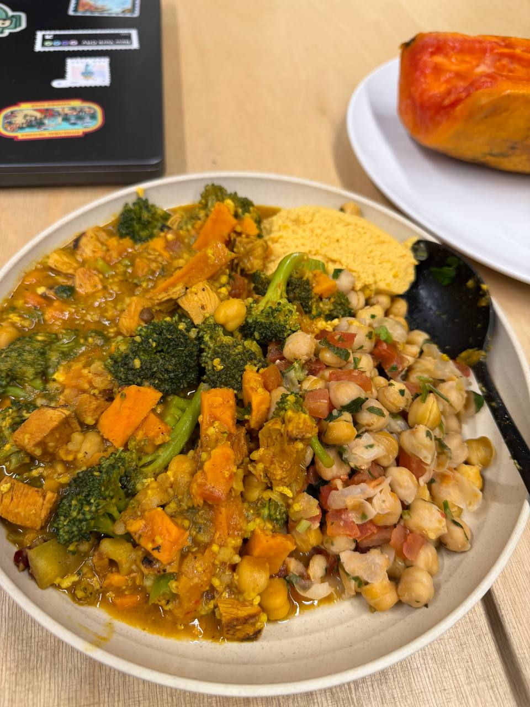

"A biological mission to reclaim peak health and cellular youth."
InBody Scan — Feb 14, 2026
Weight115.4 lb ↓2.8
*Progress: Down from 118.2 lb (Feb 10). Moving toward "D" shape.
Skeletal Muscle Mass (SMM)45.2 lb
*Muscle preserved while cutting fat — excellent sign.
Percent Body Fat (PBF)27.8% ↓0.7
*Down from 28.5% — trending in the right direction.
Body Fat Mass32.1 lb
*Target: Lose 6.6 lb fat, gain 2.2 lb lean mass.
Visceral Fat Area62.6 cm²
*Elite Status: Well below the <100 longevity risk threshold.
ECW/TBW Ratio0.379
*Improved from 0.385 — lower inflammation, better hydration balance.
Whole Body Phase Angle5.3°
*Cellular integrity improving — up from 5.1°.
Basal Metabolic Rate (BMR)1186 kcal
BMI21.8
4-Day Progress (Feb 10 → Feb 14)
| Metric | Feb 10 | Feb 14 | Change |
|---|
| Weight | 118.2 lb | 115.4 lb | ↓ 2.8 lb |
| SMM | 45.6 lb | 45.2 lb | ↓ 0.4 lb |
| PBF | 28.5% | 27.8% | ↓ 0.7% |
| ECW/TBW | 0.385 | 0.379 | ↓ 0.006 |
| Phase Angle | 5.1° | 5.3° | ↑ 0.2° |
The "10 Years Younger" Verdict
Winner: Blueprint Longevity Mix
| Feature | AG1 ("Insurance") | Blueprint Mix ("Reverser") |
|---|
| Focus | Vitamins & Gut | Age Reversal |
| Muscle | Minimal | Creatine/Taurine |
| Bio-Age | General Prevention | Ca-AKG DNA Repair |
| Transparency | Proprietary Blends | Full Disclosure |
| Cost | ~$79 - $99 | ~$55 - $75 |
Why this beats AG1 for YOUR goal:
- Skin Plumping: The Creatine in Blueprint pulls water into cells for a more youthful look.
- The "D" Shape: Raw fuel (Creatine/Taurine) to increase Skeletal Muscle Mass.
- Cellular Youth: Ca-AKG is clinical-grade support for DNA methylation/age reversal.
Activity Log — Feb 14, 2026 🏃♀️
Outdoor Run6.02 miles
Steps14,990
Step Distance7.02 miles
Move Calories481 / 200 CAL
*Move goal crushed at 240%!
Ocean Pacific Gym & Wellness
45-min Jim & Trampoline class
🏆 Award Earned: 5K Run
Milestone — Blueprint Journey Begins 🧬
Started Blueprint Longevity Mix on Feb 14, 2026 — Valentine's Day gift to future self.
Day 1 of the Bryan Johnson protocol. Tracking bio-age reversal from here.
Creative Longevity — Valentine's Day 🎨
Collaborative spray paint piece with an artist friend — layered hearts in gold, orange, and white. Because longevity isn't just biological, it's creative too.
Nutrition Journal (Feb 13)

Breakfast: Veggie Curry (Broccoli, Chickpeas, Chicken), Tofu Scramble + ½ Papaya.
Lunch: Yogurt with Cacao & Blueberries.
Sleep Log (Feb 13)
8 PM - 5 AM8.5 hrs
*Interrupted at 2 AM for Tali 🐾
Blueprint-Lite Strength Protocol
1. Spinal Reset: Dead Hangs (2x 45s)
Decompresses the spine—crucial for a youthful posture.
2. Mobility: Cat-Cow Stretch (10 Reps)
Mobilizes the spine and releases tension.
→ Longevity Circuit (3 Rounds):
Squats: 12 Reps
Leg strength is the #1 predictor of longevity.
Push-ups: 10 Reps
Builds upper body structure for the "D" profile.
Plank: 45s Hold
Core stability prevents age-related back pain.
3. Finisher: Y-T-W Stretches (15 Reps)
Fixes "tech neck" for a younger silhouette.
4. Mindset: Box Breathing (2 Mins)
Lowers cortisol immediately to prevent stress-aging.
Longevity FAQ
Q: Collagen Timing?
30-60m pre-workout for maximum joint/skin repair.
Q: Why no food after 5 PM?
To ensure a full 3-hour window before your 8 PM sleep for peak GH production.